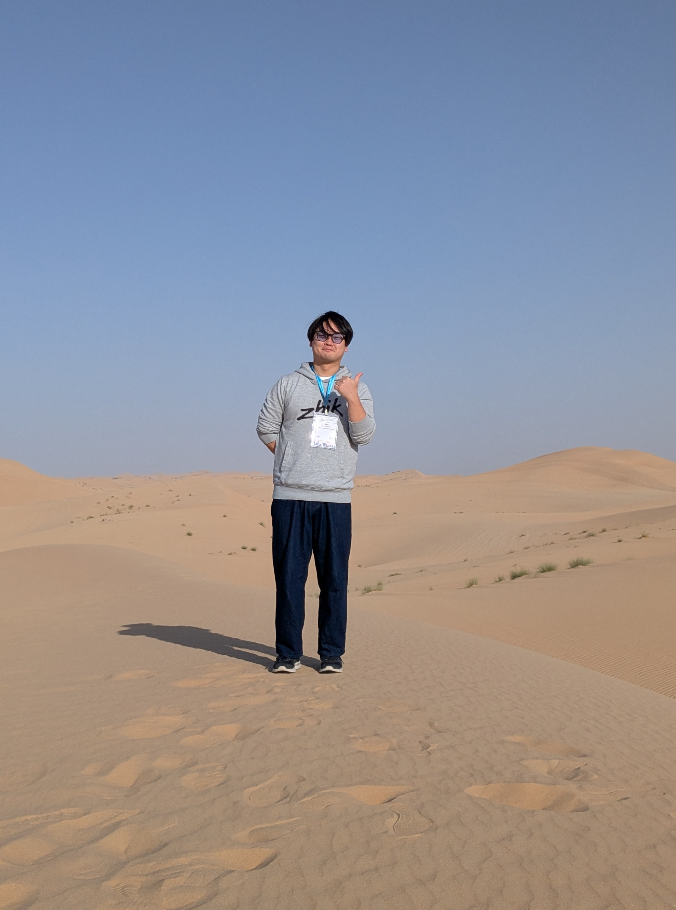
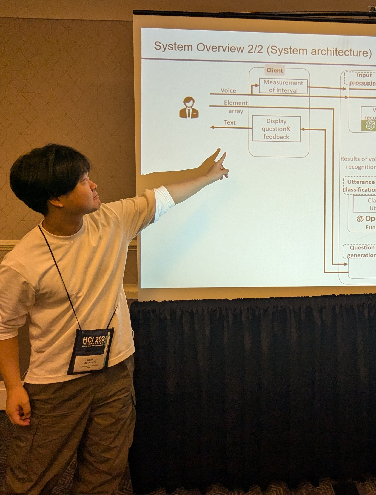
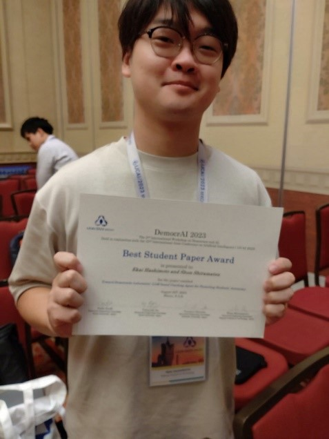
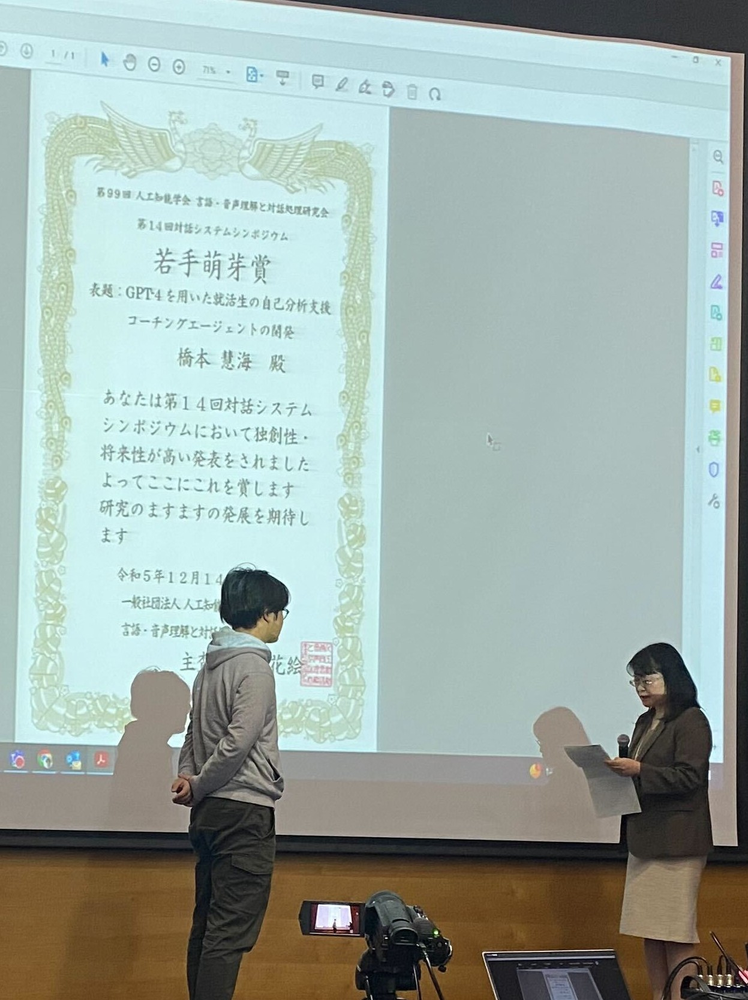

橋本 慧海 (HASHIMOTO Ekai)
名古屋工業大学SPRINGスカラシップ 研究学生 2025年4月～
Nagoya Institute of Technology SPRING Scholarship Awardee, From Apr.2025
名古屋工業大学大学院 情報工学専攻 博士後期課程（指導教員: 白松俊）2025年4月～
Nagoya Institute of Technology, Graduate School of Engineering, Ph.D. Course, Expected to graduate in Mar.2028
名古屋工業大学大学院 創造工学プログラム 修士課程 2025年3月修了
名古屋工業大学 創造工学教育課程 情報社会コース 2023年3月卒業
連絡先（Contacts）
- e-mail： e.hashimoto.611@stn.nitech.ac.jp
- 研究室URL： http://www.srmt.nitech.ac.jp/
作成システムへのアドレス
- 看護師面談支援システム：https://dialog.test-srmt.com/
- 就活支援システム：
https://hsmtapp.ngrok.io/
研究経歴
受賞歴
2nd International Workshop on Democracy and AI (IJCAI-DemocrAI 2023) https://sites.google.com/kyoto-u.ac.jp/democrai2023/awards
人工知能学会 第99回 言語・音声理解と対話処理研究会
第11回 人工知能学会 市民共創知研究会
https://sigcci.github.io/sigcci/conf11/index.html
国際会議
国内会議
対話システムに関する研究
-
「LLMによる動的スロット生成を用いたキャリア面談対話システム」
(2025/02：名古屋工業大学修士論文) -
「LLMによる仮説形成的スロット生成を用いたキャリア面談対話システム」
(2024/9：人工知能学会 第101回 言語・音声理解と対話処理研究会) -
「看護師のキャリア面談のためのLLM
を用いたスロット生成型対話システム」
(2024/2：人工知能学会 第100回 言語・音声理解と対話処理研究会) -
「GPT-4を用いた就活生の自己分析支援システムの試作」(ポスター発表)
(2023/12：人工知能学会 第99回 言語・音声理解と対話処理研究会)若手萌芽賞受賞 -
「GPT-4を用いた就活生の自己分析支援システムの試作」(ポスター発表)
(2023/09：日本教育工学会) -
「適材適所配置支援システムのための個人の属性タグの収集対話システムの試作」
(2023/03：人工知能学会 第98回 言語・音声理解と対話処理研究会) -
「適材適所配置支援システムのための個人の属性タグの収集対話システムの開発」
(2023/02 名古屋工業大学卒業論文)
対話システム以外の研究
-
「聴衆反応の類型化 :
ビブリオバトルにおける聴衆の反応と投票行動には個人性があるか?」(ポスター発表)
(2024/6：音学シンポジウム 2024（第140回MUS・第152回SLP合同研究発表会）) -
「不完全な指示に対する対話型情報補完システムの検討」
(2023/10：人工知能学会 市民共創知研究会)ベストプラクティス賞受賞
-
「個人の属性タグのオントロジーを用いた適材適所配置支援システムの設計」
(2022/08：人工知能学会 セマンティックウェブとオントロジー研究会)
共著者としての研究
2025/5 The 15th International Workshop on Spoken Dialogue Systems Technology(IWSDS2025) 貢献：データ提供
2025/5 2025年度人工知能学会全国大会(第39回) 貢献：研究アドバイス及び執筆サポート
2025/5 2025年度人工知能学会全国大会(第39回) 貢献：データ提供
2025/3 電子情報通信学会 第8回合意と共創研究会 貢献：執筆サポート及び基盤システム提供
2025/3 言語処理学会第31回年次大会(NLP2025) 貢献：データ提供
2024/11 情報処理学会コラボレーションとネットワークサービスワークショップ2024 貢献：研究アドバイス及び執筆サポート
2024/03 人工知能学会第12回市民共創知研究会 貢献：研究アドバイス及び執筆サポート
2022/11 人工知能学会 市民共創知研究会 第10回研究会 貢献：開発サポート



